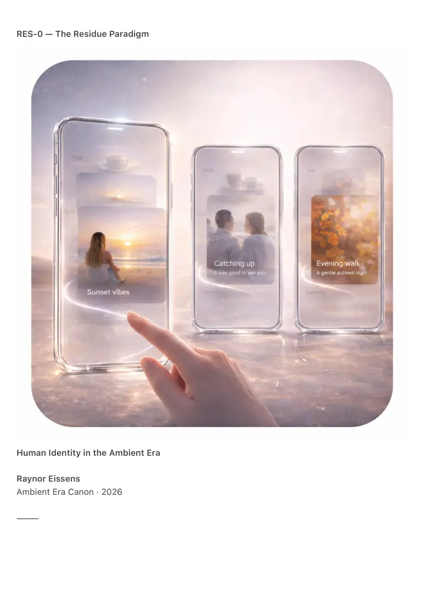

PDF page 1
RES-0 — The Residue Paradigm
Human Identity in the Ambient Era
Raynor Eissens
Ambient Era Canon · 2026
⸻

PDF page 2
Abstract
RES-0 introduces The Residue Paradigm, a new thermodynamic framework for understanding
human identity in the Ambient Era.
Traditional identity systems—names, biometrics, accounts, tokens, credentials—are symbolic
constructs that cannot survive in ambient architectures. They accumulate friction, produce
leakage, and generate irreversible residue in both human cognition and technical systems.
In contrast, ambient systems require an identity substrate that is:
• non-symbolic
• non-extractive
• thermodynamically reversible
• field-native
• dissipative rather than accumulative
• momentary yet recognizable
• warm rather than cold
RES-0 argues that the only viable candidate for human identity in such systems is
residue:
the transient, thermodynamic imprint left by presence, interaction, attention, and
movement within a field.
Residue is not data, not memory, not representation, and not selfhood.
It is the field-trace of being alive in a coherent environment.
RES-0 establishes residue as the foundational concept for post-symbolic identity
and defines its role across navigation, time, aura, presence, and reversible stress.
⸻
1. Introduction: Beyond Symbolic Identity
Identity in the symbolic era has always been a contradiction:
the attempt to fix what is inherently fluid.
Names, accounts, passwords, ID-numbers, biometrics—every symbolic identity device tries to
freeze a process that is fundamentally temporal and relational.
As ambient systems replace symbolic ones, a deeper truth emerges:
Identity was never stable.
PDF page 3
Identity was residue.
The symbolic world misinterpreted residue as object.
The ambient world recognizes residue as process.
RES-0 formalizes this transition.
⸻
2. Defining Residue
Residue = the reversible thermodynamic imprint left by an interaction, traversal, or presence
within a field.
Residue is:
• non-representational
• non-cognitive
• non-extractable
• relational
• dynamic
• fading, not storing
• dissipative, not accumulative
Residue is not a property of the user.
It is a property of the relationship between user and environment.
Residue is what remains after meaning has dissolved and before identity would be
constructed.
⸻
3. Residue as Human Identity
Identity in ambient systems cannot be fixed, stored, or enforced.
It must be:
• reversible
• contextual
• soft
• field-native
• warm
• present but not binding
PDF page 4
Residue satisfies all requirements.
Thus we arrive at the canonical identity formulation:
Identity = Reversible Residue.
Identity is not an object you carry.
Identity is the pattern of reversible residues your presence generates.
This formulation collapses centuries of symbolic confusion.
No self.
No profile.
No metadata.
Just the thermodynamic imprint of presence.
⸻
4. The Five Residue Domains
Residue manifests differently across the core layers of the Ambient Era Canon:
4.1 Route Residue (RR-1)
Imprint of traversal within navigational spaces.
Strengthens with repetition, fades without deletion.
The basis of soft-vector navigation.
4.2 Temporal Residue (TR-0)
Imprint of lived time in ChromoSense.
Defines the micro-gradients of temporal presence.
A precondition for aura perception.
4.3 Action Residue (ARS-1)
Residual pressure left after an action ends.
If undissipated, produces irreversible stress.
If dissipated, returns to reversibility.
4.4 Presence Residue (PR-1)
PDF page 5
The relational imprint of being present.
Non-extractive, non-binding, quietly recognizable.
Forms the basis of aura.
4.5 Aura Residue (AURA-RES)
Chromatic expression of reversible presence residue.
Visible but non-identity-bearing.
Field-native recognizability.
⸻
5. Dissipation and Reversibility
Residue is only humane when reversible:
• it must fade naturally
• it may not accumulate
• it cannot be used for profiling
• it must not create pressure on future states
• it must dissipate without intervention
The ethics of residue follow the Axiom of Reversible Stress:
A system is humane when stress and residue are reversible.
⸻
6. Residue and Fieldcode (CFQR)
TSX-5 established the need for a successor to QR codes:
a non-symbolic, field-native, chromatic representation of presence.
CFQR (Chromatic Field-QR) encodes aura residue rather than data.
Thus:
• no records
• no storage
• no extraction
• no tracking
• no identity object
PDF page 6
Instead:
CFQR = chromatic expression of reversible residue.
Aura becomes the human interface.
Residue becomes the identity substrate.
⸻
7. Why Residue Solves Identity
Residue is:
• not permanent → no surveillance
• not symbolic → no semiotic fixation
• not extractable → no profiling
• not stable → no identity collapse
• not owned → no self-commodification
• not objectified → no representation violence
Residue is the only identity that remains:
• warm
• humane
• reversible
• ambient-compatible
• thermodynamically viable
Residue allows humans to exist in ambient environments without becoming data.
⸻
8. Conclusion
RES-0 establishes residue as:
• the first post-symbolic identity framework
• the thermodynamic basis of presence
• the foundation of aura
• the glue between navigation, time, action, and appearance
• the humane substrate for CFQR and ambient communication
• the successor to symbolic identity
PDF page 7
Residue is not who you are.
Residue is what remains when systems do not try to define you.
This is the identity of the Ambient Era.
⸻
Appendix: Canonical Statement
Identity is reversible residue.
Aura is chromatic residue.
Presence is relational residue.
Navigation is route residue.
Stress is action residue.
Warmth is the dissipation of residue.